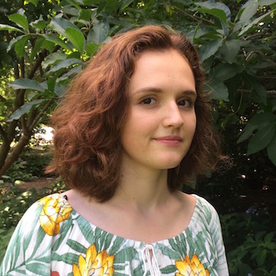

About Me
I am a student majoring in Interactive Digital Media at Drexel University. I am a Philadelphia native who fully embraces of the liveliness, pace, and diversity of the urban environment. I have been active in my community and believes in the importance of supporting citizen programs. As design is my passion, I enjoy drawing, designing patterns, origami, and constructing jewelry. I am currently is working part time as a CAD draftsman at Bonitatibus Architects.
Resume
Skills
HTML
CSS
JavaScript
Adobe Suite (Illustrator, After Effects, Photoshop)
Responsive Design
Prototyping (Invision, UXPin, Flinto)
Work Experience
Bonitatibus Architects
Architectural Assistant
September 2016 – Present
- Visualized solutions for clients requests
- Revised drafts of floor plans
- Drafted iterations of designs through photo manipulation
- Produced graphics to present to clients
- Developed organizational skills
Campus Activities Board
Website Manager
June 2018 - Present
- Collaborated with board members to conceptualize and develop a digital brand
- Promoted large-scale events through a digital format
- Utilized feedback from potential users to come up with a solution
- Clarified information architecture of existing website
- Identified and resolved issues in design and structure
Volunteer Experience
Community Involvement Club
Club leader
September 2012 – June 2016
- Managed and organized service events
- Promoted events to increase student interest and awareness
- Participated in and volunteered at the Philadelphia AIDS Walk
- Facilitated water stations at the Philadelphia Marathon and the Broad Street Run
Science Leadership Academy Interviews
Winters 2012, 2013, 2014, 2015
- Supervised and prepared potential students for the interview process
- Assessed combatibility of potential students to Science Leadership Academy’s environment